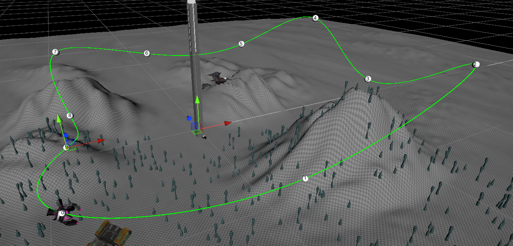

About the project
In this game the player controls a small submarine and is tasked with scanning a number of spaceship wreckages on the dark ocean floor.
To be able to navigate through the darkness, the player has headlight with a shorter range, and an echolocation pulse that will briefly light up the surrounding area.
A dangerous robot also patrols the area that needs to be avoided, it will try to grab any intruder it spots with its search light.

A mostly dark view, with robot search lights in the distance.

One of the wrecks found on the ocean floor, players need to stay near these for a while to fully scan them.
Code sample: Robot behaviour
The robot that patrols the area functions using a statemachine: In the roam state it follows a set path, and when it notices the player it switches into the attack state.
This script is the logic behind the robot, it switches to attack mode when when the player enters its view collider.
It's not immediately game-over for the player if they are spotted, instead the robot will pull the player towards it.
While being pulled the player is still able to escape by moving away from the robot and escaping its tractor beam.
public enum States
{
Roam,
Attack
}
public class Boss_AI : MonoBehaviour
{
States Currentstate;
[SerializeField] float Pullforce = 10;
[SerializeField] Animator animator;
[SerializeField] Cinemachine.CinemachineDollyCart dollyCart;
[SerializeField] AudioSource AttackRoar;
[SerializeField] Cinemachine.CinemachineVirtualCamera PlayerCam;
[SerializeField] CanvasGroup GameoverScreen;
GameObject Target;
Rigidbody TargetRb;
void Start()
{
SetState(States.Roam);
}
private void OnTriggerEnter(Collider other)
{
if (other.tag == "Player")
{
SetState(States.Attack);
Target = other.gameObject;
TargetRb = Target.GetComponent();
}
}
void SetState(States NewState)
{
switch (NewState)
{
case States.Roam:
animator.SetBool("AttackMode", false);
Currentstate = States.Roam;
GameoverScreen.alpha = 0;
PlayerCam.GetCinemachineComponent().m_AmplitudeGain = 0;
dollyCart.m_Speed = 15;
break;
case States.Attack:
Currentstate = States.Attack;
animator.SetBool("AttackMode", true);
dollyCart.m_Speed = 0;
PlayerCam.GetCinemachineComponent().m_AmplitudeGain = 2;
AttackRoar.Play();
break;
}
}
void Update()
{
if (Currentstate == States.Attack)
{
transform.LookAt(Target.transform);
TargetRb.AddForce((transform.position - Target.transform.position) * Pullforce * Time.deltaTime);
if (Vector3.Distance(Target.transform.position, transform.position) <= 15)
{
GameoverScreen.alpha = 1 - (Vector3.Distance(Target.transform.position, transform.position) / 15) + 0.2f;
}
else if (Vector3.Distance(Target.transform.position, transform.position) > 100)
{
SetState(States.Roam);
}
}
}
When in the roaming state, the robot makes use of a Cinemachine dolly track, this is one of Unity's additional packages that add more camera control.
While this function is meant to move cameras, any game object can be attached to this track.
The dolly track is made by assigning a collection of waypoints, it then applies bezier interpolation to make the track smooth, having this system already in place saved some time in the development of this prototype.

The green line is the path that the robot takes in the roam state.